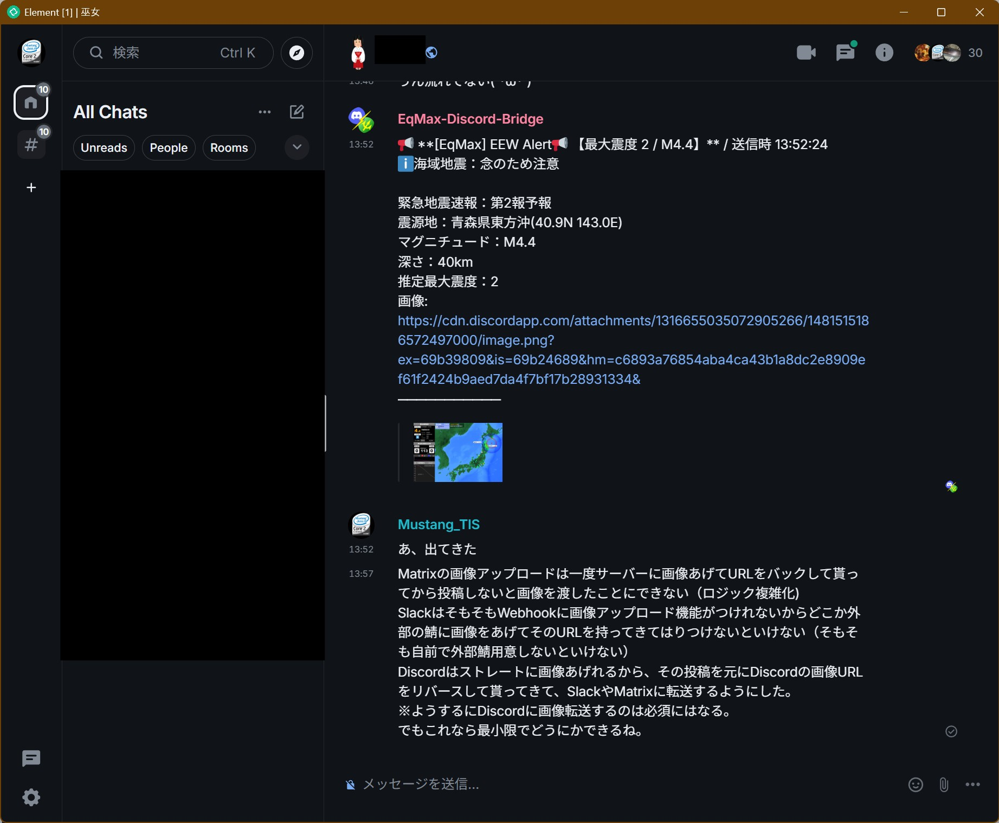
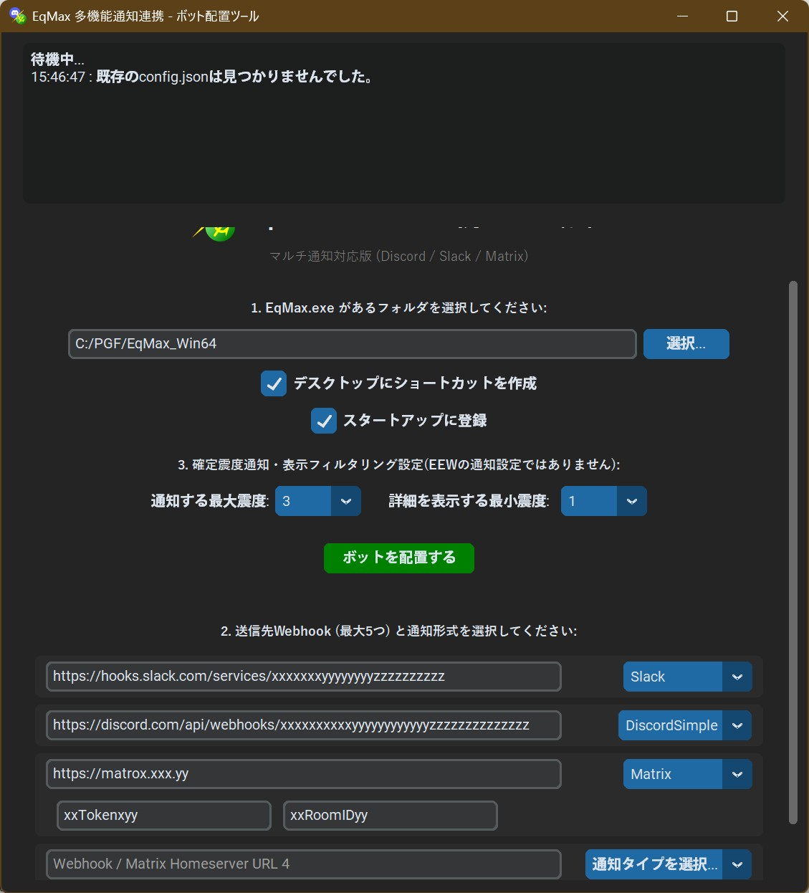

Slack連携設定
SlackのIncoming Webhookの取得
Slackの「Incoming Webhook」を利用して、EqMaxの通知を送信できます。
- Discordに近い感覚で設定可能
- Webhook URLを取得して貼り付けるだけで連携が完了します。
- 内部処理はSlack専用に最適化済みですので、URLを貼るだけで動作します。
- 【重要】画像送信について
- Slackの仕様上、Webhook経由での直接画像投稿には対応していません。
- 本ツールでは「テキスト通知のみ」のサポートとなります。 画像が必要な場合はDiscordに投稿し外部ツールでそこと連携させる等してください。
- 作成権限について
- 一般ユーザーでも作成可能ですが、ワークスペースの設定（管理者の制限）によっては作成できない場合があります。
- 設定メニューの深い場所にありますが、次項の手順通りに進めば作成可能です。
Slackの設定手順
Slack Appの登録
① アプリの登録


- 「Create an App」から「From scratch」を選択します。
- AppNameとWorkspaceを入力して「Create App」をクリックします。
② アプリ名の登録


- 「App Home」メニューから「App Display Name」の「Edit」を選びます。
- Display NameとDefault usernameを設定して「Save」します。
③ Incoming Webhookの有効化


- 左メニューの「Incoming Webhook」を開き、「Activate」をONにします。
- ページ下部の「Add New Webhook to Workspace」をクリックします。
- 通知先チャンネルを選択して「許可」すれば、Webhook URLが発行されます。
SlackをDiscord設定に登録

総合ハブの
Discord連携設定 (②の部分)を実行してください。 Discord連携でSlackへ接続する
Discord連携登録

- EqMax.exeの選択: ファイルを選択します。
- ショートカット登録の部分を用途に合わせて☑する。
- 確定震度情報の投稿設定
※最大震度いくつ以上から通知か、最低震度いくつ未満から切り捨てか - 選択タイプからSlackを選ぶ: これによりSlack用設定が適応されます。
- SlackのWebhook URLを貼りつけてbotを配置するを選ぶ
- 次にボットを配置するをクリックし指示通りに進んでください。
Discord連携を起動する
起動方法

Discord起動用ショートカットは二種類あります。
- 通常起動用ショートカット: 最小化起動し、スタートアップにも登録されます。
- セーフモード起動用: 起動しない場合のトラブルシューティング用です。一度正常に起動できれば、次回からは通常起動が可能です。
※初回はセキュリティ警告を許可する必要があります。
bot実行時プロンプトの見方


最小化中のウィンドウを展開するとアプリの情報ログが流れます。
不具合の検知とかに役立ちます。
- 初期起動プロセスアプリ起動時に読み込まれた個設定を表示します。
- 監視/Eq_Guardian: フリーズ検知・自動再起動・メモリリーク監視(1GB制限)・定期生存報告を行います。
- EEW・地震情報通知表示:各種連携システムの通知成功可否や投稿内容を表示します。
Tips：その他情報
※Discord投稿設定者限定：EEW画像添付方法
Discordに投稿設定をかけている人は、他のチャットアプリ（Slack、Matrixなど)にも画像を投下できます。

システムの流れとしては以下の通りです。
- Discord (Embed及びSimple) でEEW通知を送信。
- Discordに投稿された内容から画像URLをリバースして当bot側で取得します。
- その後、投稿用フォーマットにDiscordの画像用アドレスを追加して流せるようにします。
- SlackやMatrixへの送信
- Discordの画像用アドレスがセットで投稿されます。
- Slack・Matrixでは、そのURLからDiscordに送信された画像を確認可能です。
※注意：先述の通り、Discordに事前に（あるいは上位で）投稿処理が完了している必要があります。
詳しくは後述の『Discord以外への画像添付投下の方法』を併せてお読みください。
Discord以外への画像添付投下の方法

Discord連携ボット設定画面の設定順序に基づき説明します。
- 当システムは、設定画面の上から順に投稿処理を実行します。
例えば、画面の設定が [Slack] → [Discord] → [Matrix] の順だった場合：
- Slackへ送信：まだ画像URLがないため、テキストのみ投稿。
- Discordへ送信：ここで投稿が行われ、画像URLが生成・取得される。
- Matrixへ送信：取得済みのDiscord画像URLを付与して画像付き投稿。
- 運用のアドバイス：
Discordへ投稿した時点で画像URLを取得・添付できるため、「画像を含めたくない先」をDiscordより上位に、「画像付きで投稿したい先」をDiscordより下位に記載するよう調整してください。